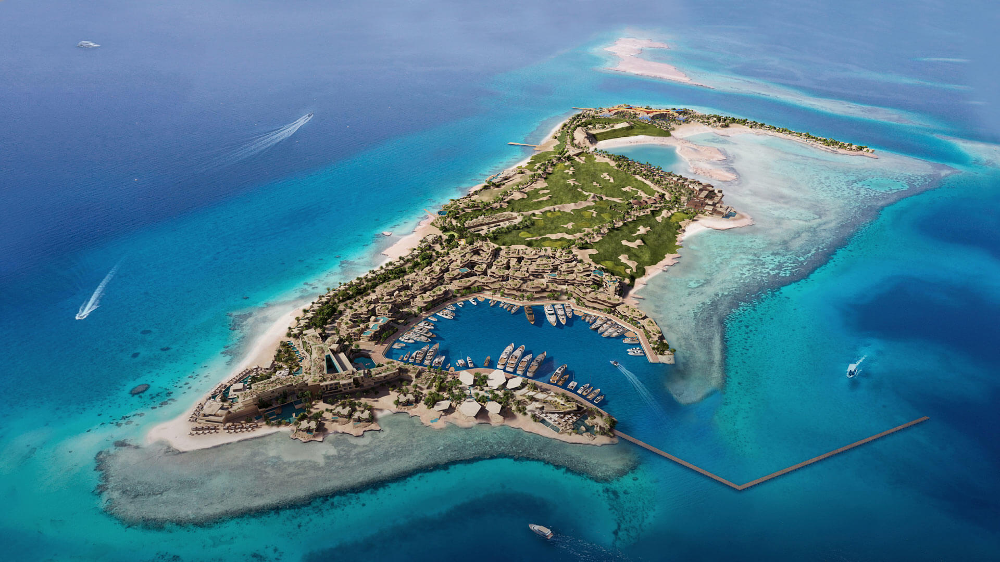
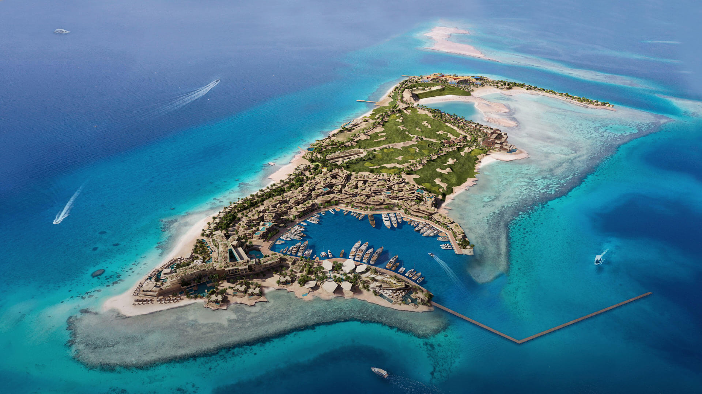

مشروع نيوم
مشروع نيوم هو أحد أكبر المشاريع الطموحة التي أطلقتها المملكة العربية السعودية ضمن رؤية 2030، ويهدف إلى بناء مدينة مستقبلية على ساحل البحر الأحمر تعتمد بشكل كامل على التكنولوجيا الحديثة والاستدامة.
يسعى المشروع إلى خلق بيئة متطورة تجمع بين الابتكار، التطور الاقتصادي، والترفيه في مجتمع متكامل يضم قطاعات متنوعة مثل الطاقة، المياه، التنقل، الغذاء، والصحة.
نيوم تُعد نموذجًا للمدن الذكية، حيث يتم الاعتماد بشكل كامل على الطاقة المتجددة والبنية التحتية الذكية، مما يجعلها وجهة عالمية للاستثمار والسياحة.
أبرز نقاط المشروع :
- موقع استراتيجي:يقع على ساحل البحر الأحمر ويغطي مساحة تزيد عن 26,000 كيلومتر مربع.
- تنويع الاقتصاد: يشمل قطاعات مثل التكنولوجيا، السياحة، الصحة، والطاقة.
- الاستدامة:الاعتماد الكامل على الطاقة المتجددة ومبادئ الاستدامة البيئية.